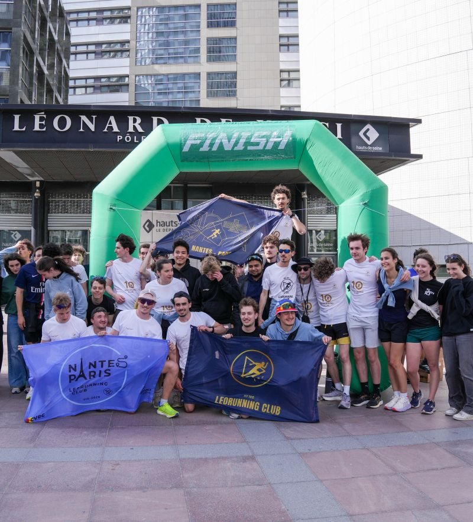
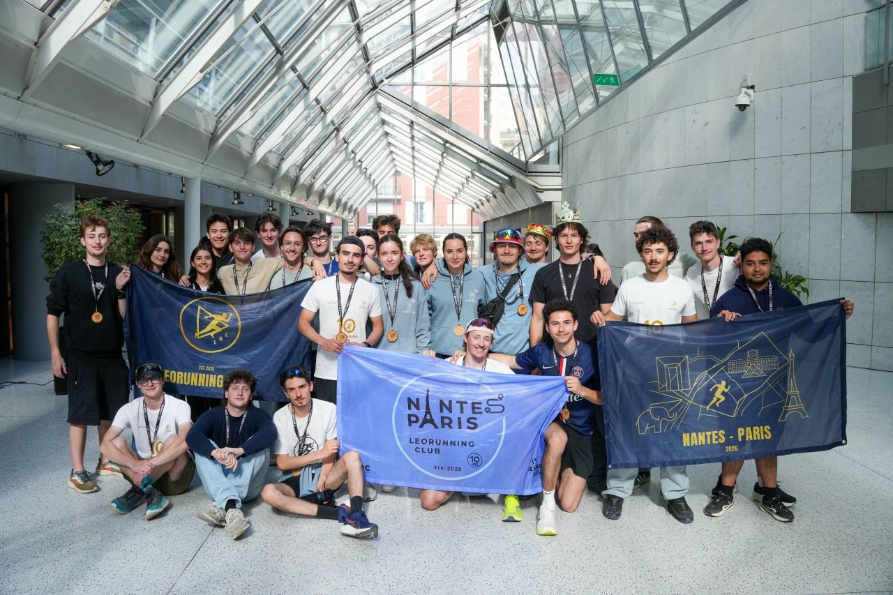

Bonjour, je suis Adonis.
Élève ingénieur en cybersécurité et cloud computing, je me spécialise en sécurité de l'IA.
Huit projets, de la première année d'école à aujourd'hui. Chacun a sa fiche complète : ouvrez celle qui vous intrigue.
Ce sur quoi je travaille en ce momentCe que je construis, en parallèle de l'école.Mon activité de consultant en sécurité de l'IA, un outil pour choisir sa voiture, un jeu mobile, et Overdisc, pour découvrir de la musique comme on lit une carte.
Mon expérience- Sécurité de l'IA
- OWASP Top 10 LLM, Garak, PyRIT, AgentDojo, Ollama
- Sécurité applicative
- DAST, OWASP ZAP, intégration continue
- Conformité
- RGPD, AI Act
- Développement
- Python, C#, C++, SQL, Claude Code
- Données
- Statistiques, Monte Carlo, Power BI, Excel
- Langues
- Anglais B2+ (TOEFL ITP 607/677), français natif (Certification Voltaire)
Courir
Paris–Nantes, trois années de suite.
Chaque printemps, le LéoRunning Club relie à pied les deux campus de l'ESILV : un peu plus de 400 km en relais, en quatre jours, par équipes de quatre ou cinq. J'en ai couru trois éditions. La dernière partait de Nantes, et l'arche d'arrivée nous attendait devant le Pôle Léonard de Vinci, à La Défense.
L'édition 2026, d'après Strava.


- 2020 – 2021
- Action contre la faimBénévole : des courses solidaires, pour financer l'association.
- 2024 – 2025
- LéoRunning ClubResponsable communication de l'antenne nantaise : 25 recrues, et une communauté de plus de 150 membres.
- 2024 – 2026
- Paris–NantesTrois éditions, en relais, entre les deux campus.
- Aussi
- La basse, apprise seul. Le volley et la musculation. Le design d'objet, l'architecture, la finance et la Formule 1.
Parlons-en.
Un projet, une question : écrivez-moi.